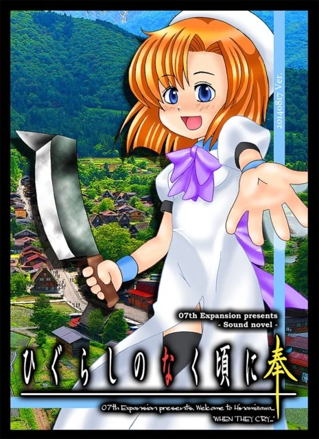
INSTALLATION / 2-STEP SETUP
İki adımda Türkçe yama kurulumu.
Türkçe yerelleştirme paketi 07th-Mod altyapısı üzerine çalışır. Önce 07th-Mod yaması kurulmalı, ardından Türkçe Yama Kurulum Sihirbazı çalıştırılmalıdır.
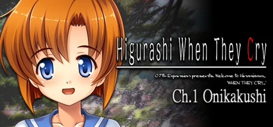
ADIM 01 · ÖN KOŞUL (07TH-MOD)07th-Mod Temel Kurulumu (English)
Konsol grafikleri, Japonca seslendirme (Voice), dudak senkronizasyonu ve gelişmiş menü altyapısı için oyunlarınıza resmi 07th-Mod Python Patcher ile İngilizce yamayı kurun.
07th-Mod Patcher İndir →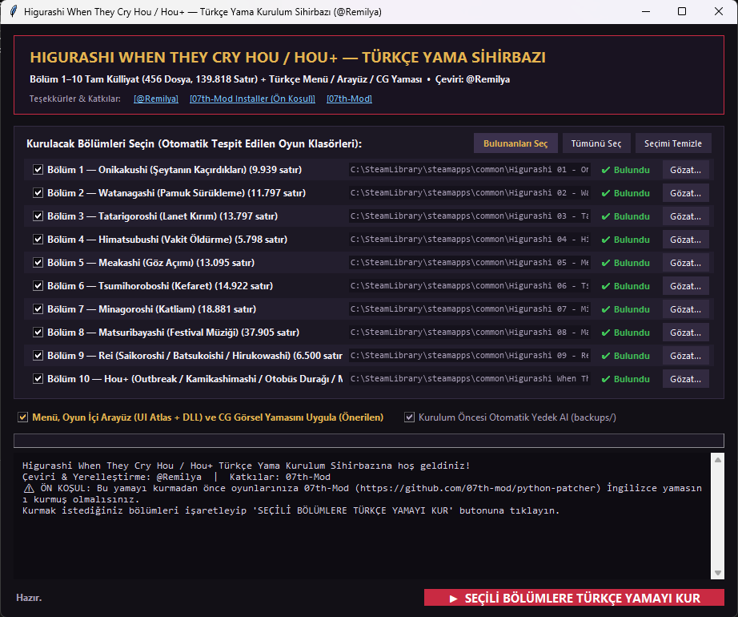
ADIM 02 · TÜRKÇE YAMA SİHİRBAZI V1.0.1Higurashi Türkçe Yama v1.0.1
İndirdiğiniz arşivdeki Higurashi-Kurulum.exe veya kurulum.bat dosyasını çalıştırın. Sihirbaz bilgisayarınızdaki oyunları otomatik tespit ederek hikâyeyi, arayüzleri ve görselleri Türkçeleştirir.
Türkçe Yamayı İndir (v1.0.1) →ARCHIVE SHELF / 07TH EXPANSION CLASSIC COVERS
Orijinal kapaklarla tamamlanan külliyat rafı.
Higurashi When They Cry Hou, Rei ve Hou+ külliyatında yer alan ve Türkçeye kazandırılan tüm hikâye arkları.
TAM SÜRÜMLER & ÖZEL PAKETLER // HOU · REI · HOU+
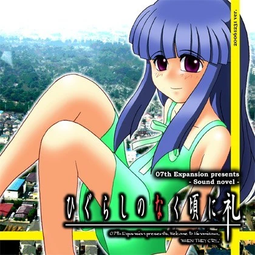
Higurashi Rei
Saikoroshi / Batsukoishi / Hirukowashi TÜRKÇE YERELLEŞTİRME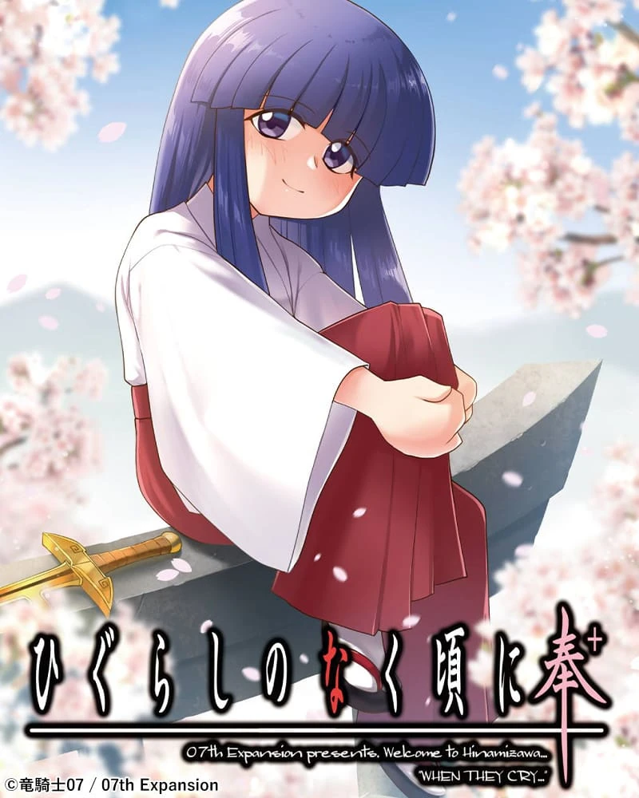
Higurashi Hou+
Outbreak / Kamikashimashi / Mehagashi / Bus Stop TÜRKÇE YERELLEŞTİRMESORU VE CEVAP ARKLARI // ORİJİNAL COMIKET CD KAPAKLARI (CH.01–08)
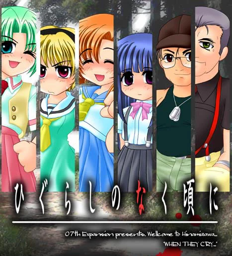
Onikakushi-hen
İblisler Tarafından Kaçırılma TÜRKÇE YERELLEŞTİRME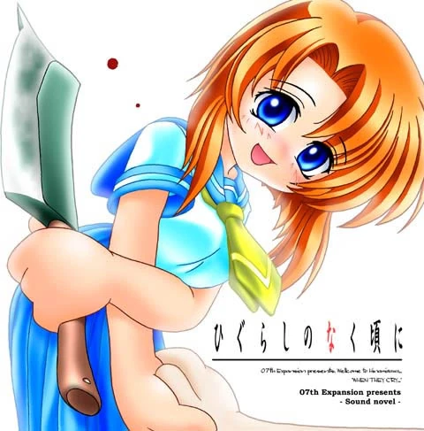
Watanagashi-hen
Pamuk Sürükleme Festivali TÜRKÇE YERELLEŞTİRME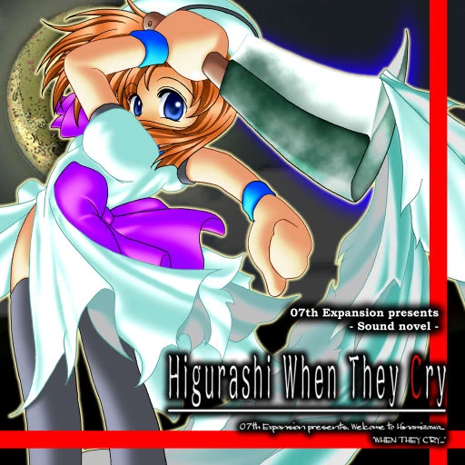
Tatarigoroshi-hen
Lanet Kırım Bölümü TÜRKÇE YERELLEŞTİRME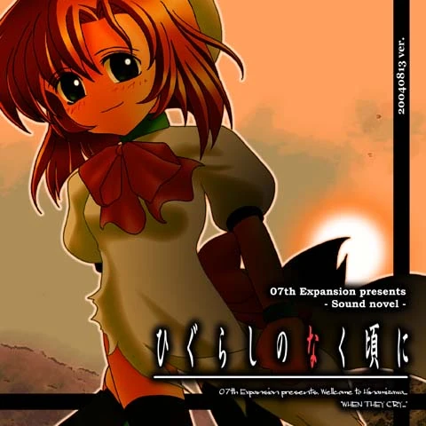
Himatsubushi-hen
Zaman Öldürme Bölümü TÜRKÇE YERELLEŞTİRME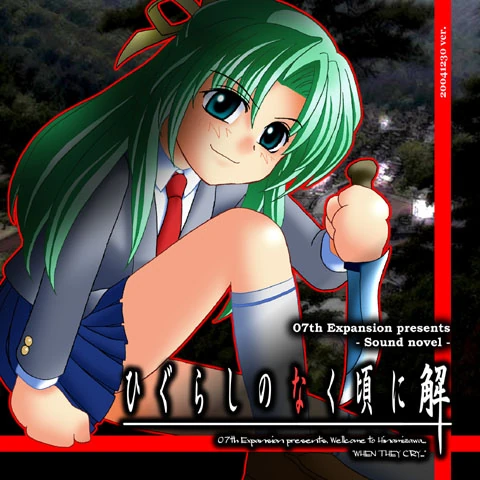
Meakashi-hen
Göz Açma Bölümü TÜRKÇE YERELLEŞTİRME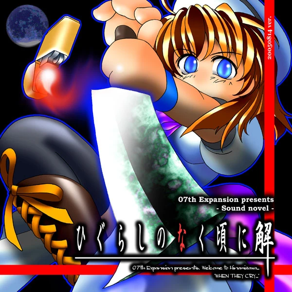
Tsumihoroboshi-hen
Kefaret Bölümü TÜRKÇE YERELLEŞTİRME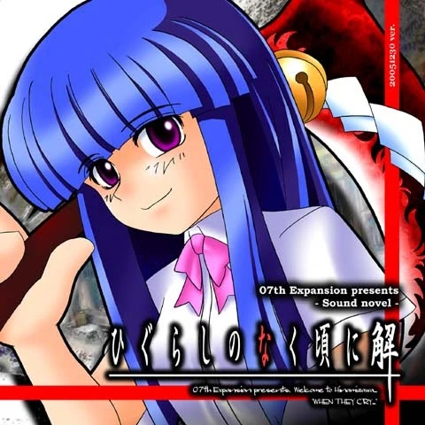
Minagoroshi-hen
Katliam Bölümü TÜRKÇE YERELLEŞTİRME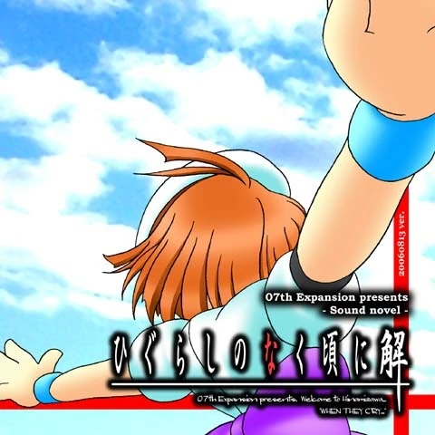
Matsuribayashi-hen
Festival Eşliği Bölümü TÜRKÇE YERELLEŞTİRMECREDITS / ACKNOWLEDGMENTS
Emeği geçenler ve açık kaynak katkıları.
RML
Remilya
Higurashi When They Cry Hou ve Hou+ Türkçe çevirisi, oyun içi arayüz ve görsel yerelleştirmesi ve otomatik kurulum sihirbazı.
WL
Witch Love
Witch-Love/higurashi-scripting-tr projesindeki erken dönem Türkçe çeviri çalışmaları ve seriye verdikleri değerli emekler için teşekkürler.
07M
07th-Mod
Konsol grafikleri, Japonca seslendirme entegrasyonu, gelişmiş oyun motoru özellikleri ve açık kaynaklı python-patcher altyapısı için teşekkürler.